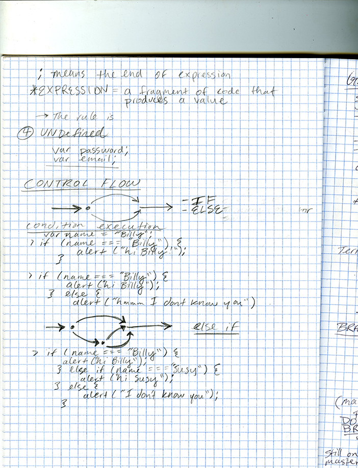
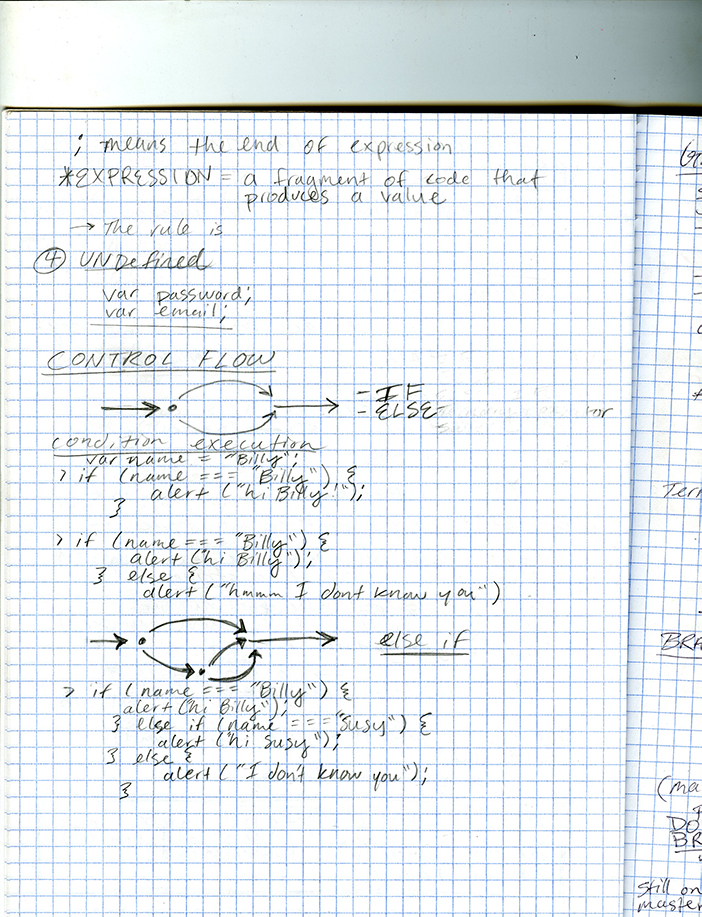

Case Study
Black-Eyed Susans explores the culture of rock climbing from the perspective of a woman. Although rock climbing has a reputation of rebellion and freedom it is not unlike any other sport in that it is still male dominated. Being a climber myself, I’m inspired to share the stories of other women who came before me. However, since the majority of documentation and notariaty came from male climbers the historical accounts of the first women involved where often
erased or dismissed. Mountaineering has come a long way and now it is a unique case where women have equal
physical capability as their male counterparts, yet men still continue to participate in higher numbers. I
want to provide role models for young girls and women to encourage them to get into the sport. The goal
is to inform people on the achievements of women mountaineers as their stories were often forgotten by
society.
I created illustrations, took photographs, and designed and developed a timeline of women and
mountaineering. I am a highly motivated self starter and integrated HTML5, CSS3, Javascript and React into my senior project to create
a dashboard of Eileen Healey’s mountaineering diaries consisting of 26 volumes and over two hundred
entries from 1932 to 1958. To my knowledge, no other data visualization of a person’s climbing career has
previously existed and I feel proud to contribute to the documentation of Healey’s story.
Even after the academic due date of this project I'm continuing to revise and create additions to this project. In the process of my thesis my curiousity was sparked to learn more about the various ways one can analyze and communicate a story with data. The programming language R looks like it can play a role in creating more user interaction and transparancy with data. Click the link below to visit the site.
Black-Eyed Susans
A special thank you to the design department at SUNY New Paltz. Amy Papaelias, Dimitry Tetin, Anne Galpern, and Joshua Korenblat I couldn't have done it without you all. Josh, thank you for letting me borrow all those books!!

 
